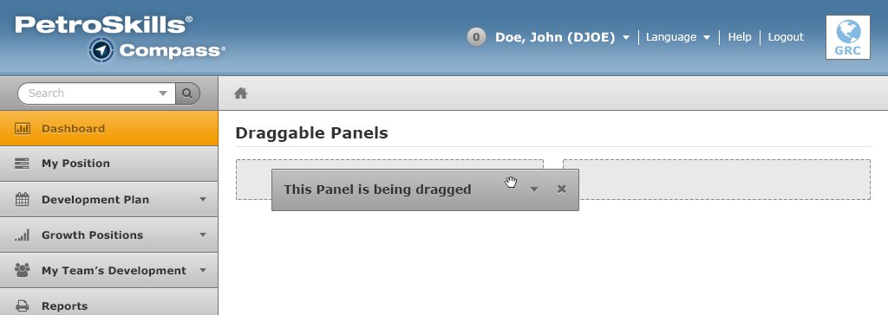
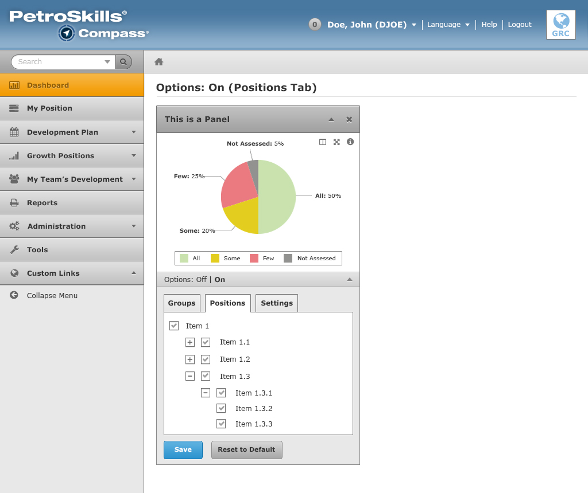
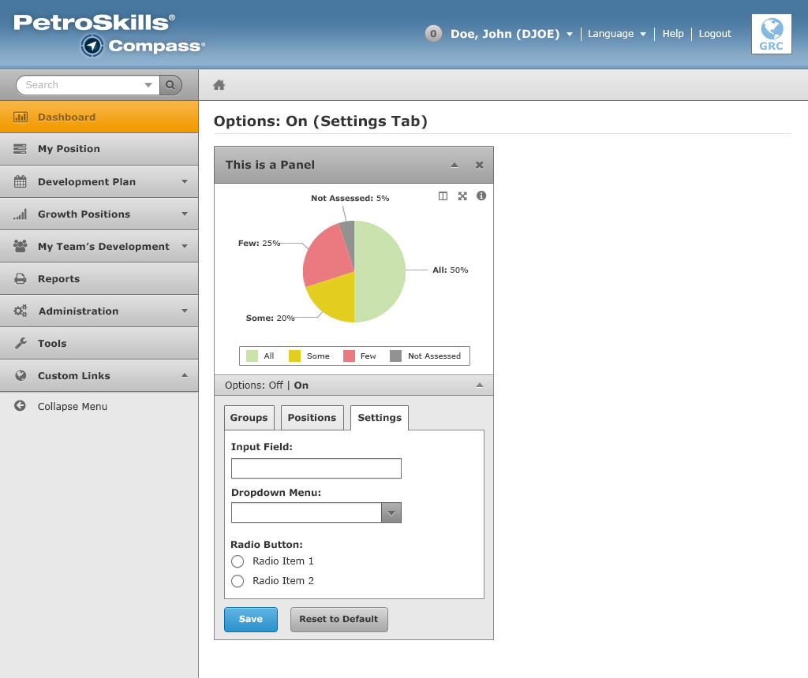
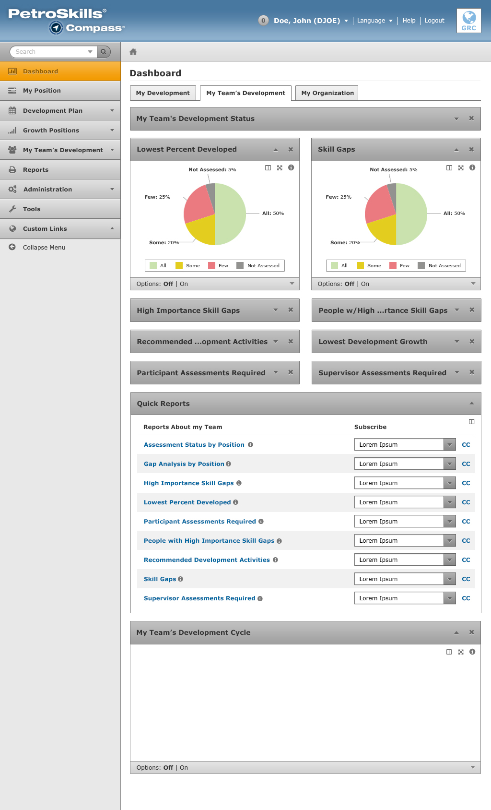
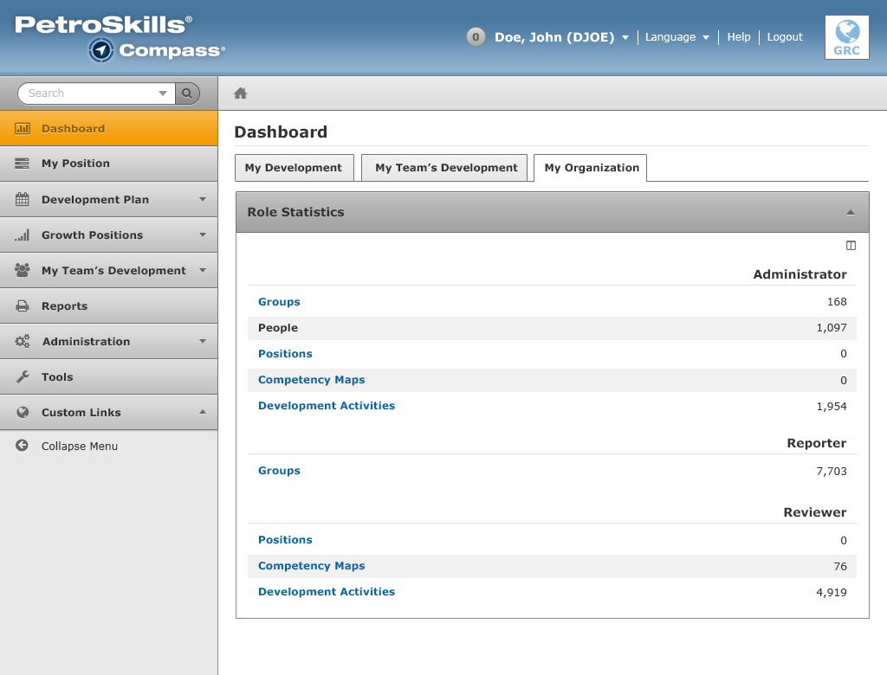

Panel Functionality
The Dashboard page displays various functionality that a user can do. Panels are layed out in the main content and have various functions:
- They are resizable. They can span across from 50% to 100%. This allows a user to make certain charts more important than others. The control is activated by an icon button that looks like a .
- They can be rearranged and draggable. This allows the user to rearrange the dashboard page to their own preference. Refer to screenshot below to see more information.
- The charts have interactive controls to help engage and clarify data to the user. The control makes the chart full-screen. The control pops up a new window or tab and directs user to a page that shows about more information about the chart.

Resizable Panels
Panels can be resized by a click or a tap of a button.
Draggable Panels
Panels can be moved and rearranged to allows users to customize the dashboard to their own preference.
Chart Tooltips
Each chart has a tooltip to help display additional information to the user.

Chart Filters
The Chart Filters are a new functionality that allows the user to modify their chart data and what it outputs. It also allows the user to have multiple copies of the same chart but each one can have its own data.
Options On & Off
The options can be in the "Off" state or "On". When in the "Off" state, the collapse/expand action does not work and looks disabled (as shown in the left side of the screenshot). When in the "On" state (the user will click/tap on this link), the collapse/expand action will now be available and allow the user to modify their chart filters.

Groups
Groups are the second tab. It displays a tree that allows the user to change what group is shown in the chart.

Positions
Positions are the first tab upon expanding the Options menu (default). It displays a tree that allows the user to change what position is shown in the chart.
Settings
Settings are the third tab. Note: More information will come soon on this tab.
User Roles
Below are the roles that are used in the Compass application:
- Participant
- Administrator
- Supervisor
- Manager
- Mentor
- Subject Matter Expert (SME)
- Reviewer
- System Owner
- Reporter
Multiple Roles
If the user has access to multiple roles, they can display the following charts and tabs on their dashboard.
My Development
My Development tab displays charts and data that pertains to their own assigned position as a participant.

My Team's Development
If the user has a Supervisor role or has a role higher than a participant, they will have access to the My Team's Development tab. This tab displays information that pertains to their team members.
My Organization
My Organization tab displays and showcases the Role Statistics panel.
Single Role
Participant
As a Participant (and available to other roles like Supervisor, Manager, and Mentor, they have access to the following:
- My Development tab is available.
- Participant Assessment chart.
- Supervisor Assessment chart.
- My Development Status chart.
- My Development Cycle chart.
SME & Reviewer
The Role Statistics panel is assigned to the SME & Reviewer role. As a user, the panel size can be adjusted to full or half-size.

System Owner
As a System Owner, they get access to the Competency Framework and My Team panels. In the screenshot below, users can click on the layout icon to change the panel size to full size or half size.

Reporter
The Quick Reports panel is assigned to the Reporter's role. This panel allows users to receive reports through their email.